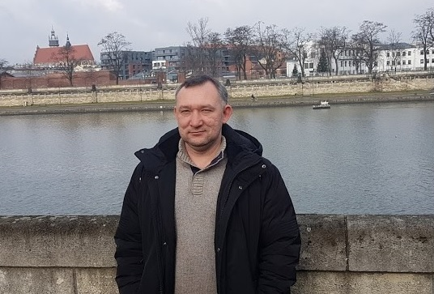

Резюме

Бондарчук Олександр Ігорович
- 1995-2000 Навчався в Інституті підприємництва та сучасних технологій м. Житомир, факультет “Економічна
кібернетика”, спеціальність: економіст
- 2000-2002 ВАТ “Укртелеком” Центр обслуговування споживачів та продажу послуг, посада: інженер
електрозв’язку, м. Житомир
- 2002-2005 працював Житомирській обласійа дирекції АППБ “Аваль” відділ споживчого кредитування посада:
заступник начальника відділу споживчого кредитування м. Житомир
- 2005-2007 працював Житомирській філії ЗАТ СК „Провідна” посада: директор Центру продаж і обслуговуання
клієнтів
- 2007-2011 працюва у страховій компанії "Гарантія" на посаді Директора Житомирської регіональної дирекції
- 2011-2013 працюва менеджером у Житомирському регіоні від Київської регіональної дирекції страхової компанії
"Аксор"
- 2013 по сьогоднішній день працюю приватним підпрємцем в м. Житомирі
Соціальні мережі
-
Fasebook
- Google+